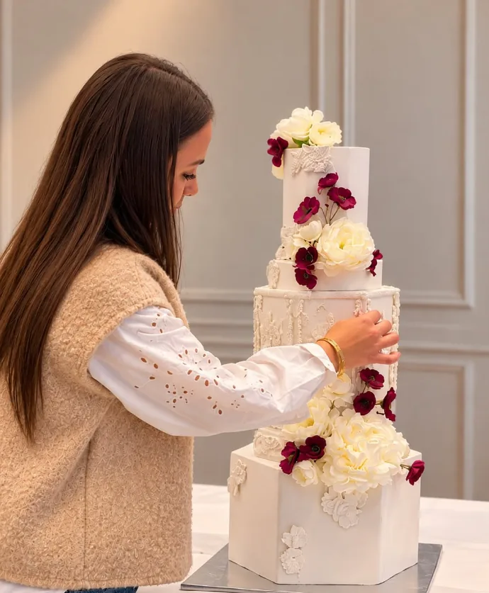
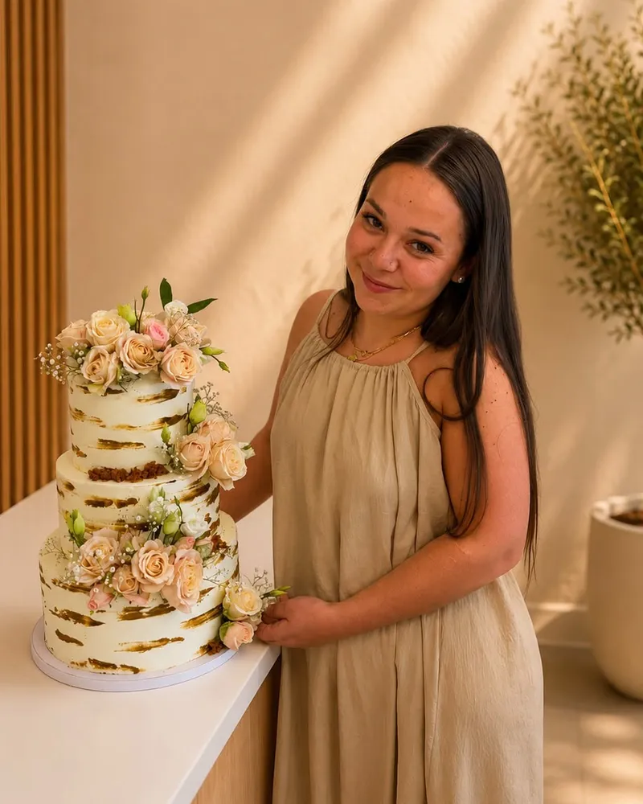
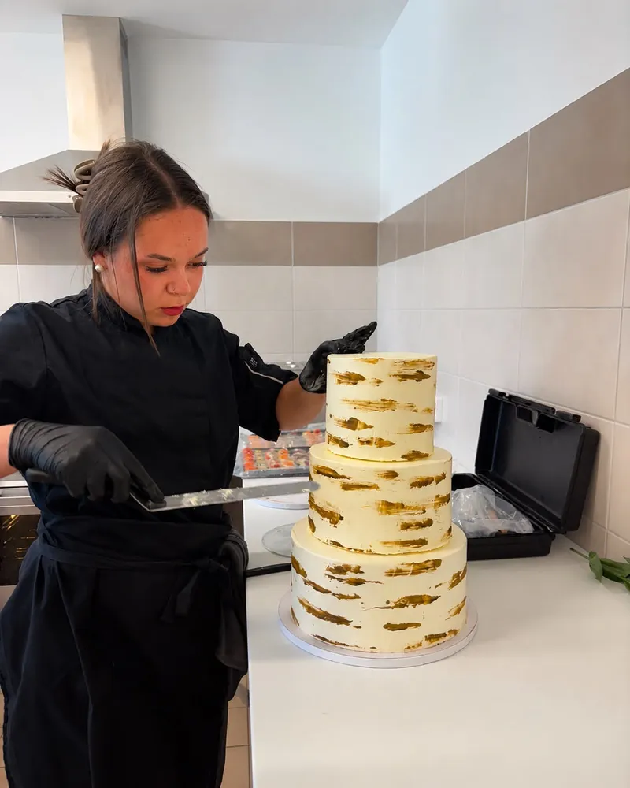
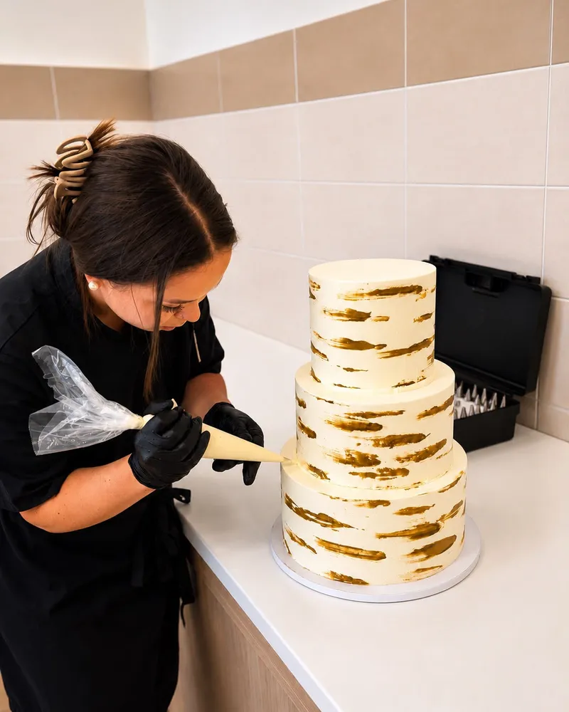
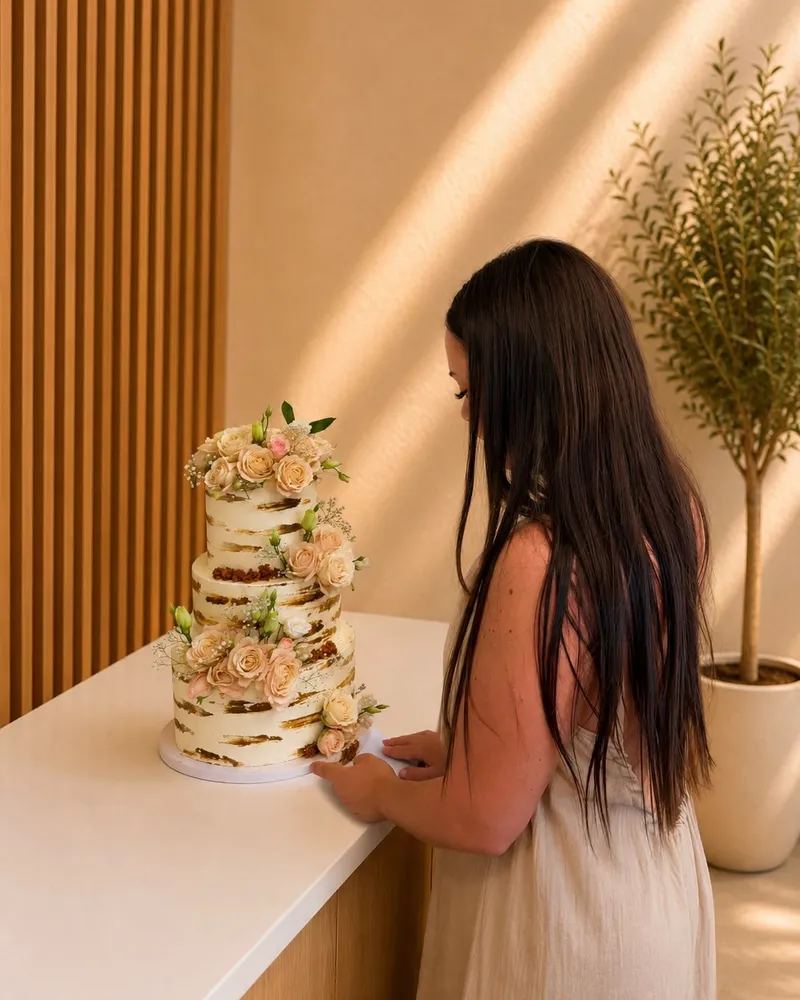
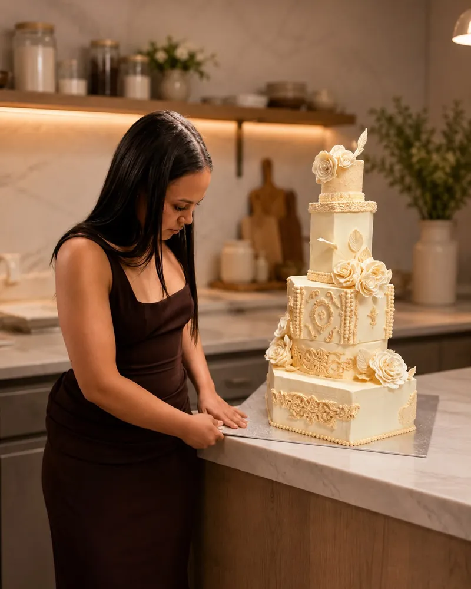

Gâteaux de mariage · Layer cakes · Aurillac
Cake’Ma, gâteaux de mariage et layer cakes sur mesure à Aurillac. Un gâteau à votre image.
Dès 15 personnesAurillac & alentours
Choisir mes saveursLE PRÉSENTOIR
PAS DEUX
PAREILS.
Une forme, une couleur, une envie.
C’est souvent comme ça que tout commence.
Quelques fêtes passées par l’atelier.






UNE PÂTISSIÈRE, UN UNIVERS
ET DERRIÈRE,
IL Y A EMMA.
Je dessine des gâteaux, mais d’abord, je vous écoute.
Votre fête, vos goûts, cette photo que vous avez gardée de côté. C’est notre point de départ. Ensuite, je travaille les formes, les saveurs et chaque détail, à la main, dans mon atelier.
Gâteaux de mariage, pièces montées, layer cakes : chaque création est unique, pensée pour votre fête. Je suis à Aurillac et je livre jusqu’à 120 km.
Racontez-moi votre idée sur InstagramDE L’IDÉE À LA FÊTE
QUATRE ÉTAPES.
- 01
L’idée
Une date, un nombre d’invités, une photo gardée de côté. Vous m’écrivez.
- 02
Le dessin
On choisit ensemble formes, couleurs et saveurs. Je vous envoie un devis.
- 03
L’atelier
Tout est fait à la main, couche par couche, les jours qui précèdent la fête.
- 04
La fête
Je livre et j’installe, jusqu’à 120 km pour un mariage. À vous de souffler.
L’ATELIER DES SAVEURS
COMPOSEZ VOTRE GÂTEAU.
Choisissez le biscuit, le coulis, la crème et la garniture.
Le gâteau se transforme à chaque choix.
Aperçu à confirmer avec Emma.
Pièce montée. Chaque étage peut avoir ses saveurs : choisissez l’étage, puis le biscuit, le coulis et la crème.
On dresse votre gâteau…
L’aperçu 3D n’est pas disponible dans ce navigateur. Vos choix restent disponibles.
LE BISCUIT
LE LENDEMAIN,
ON BRUNCHE.
Un moment gourmand pour prolonger la magie. Après un mariage ou pour un événement privé, je prépare le buffet du lendemain, sucré, salé ou les deux : on compose la formule ensemble.
Jus de fruits, café, thé et chocolat chaud pour accompagner. À récupérer, livré, ou installé sur place.
01À partir de combien de personnes ?
À partir de 15 personnes. Dès 60 personnes, on passe à la pièce montée, et chaque étage peut avoir ses propres saveurs.
02Quel budget prévoir ?
Comptez 7 à 11 € la part selon le gâteau, les saveurs et le décor : tout est fait sur mesure. La livraison s’ajoute au prix, selon les kilomètres. Pour un mariage ou une pièce montée, un acompte de 30 % à la validation du devis réserve votre date, le solde se règle à la livraison. Prix nets : TVA non applicable (art. 293 B du CGI).
03Combien de temps à l’avance ?
Au moins 15 jours pour un gâteau, et un mois et demi pour un mariage ou une pièce montée. Je prends peu de commandes par week-end : réservez tôt. Avant un mariage, une dégustation est possible : 10 €, entièrement déduits du devis s’il est validé.
04Et pour la livraison ?
Je livre à Aurillac et jusqu’à 20 km pour les gâteaux, et jusqu’à 120 km pour les mariages et grands événements. La livraison est facturée en plus, selon la distance ; l’installation se décide ensemble.
05Une allergie, un régime particulier ?
Je ne propose pas de recettes adaptées (sans gluten, sans lactose, végétalien…) et je ne peux pas garantir l’absence d’allergènes. Tout est sans porc et sans alcool.